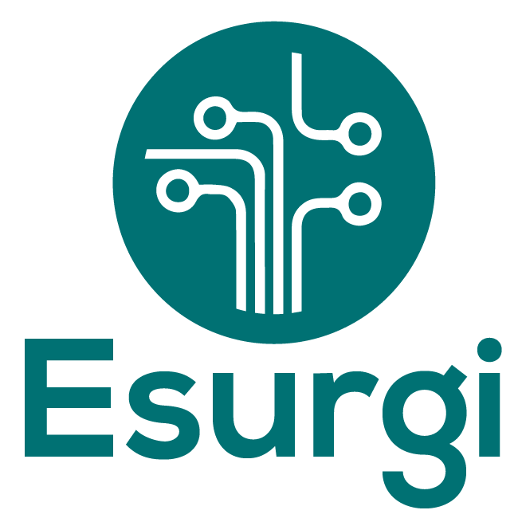
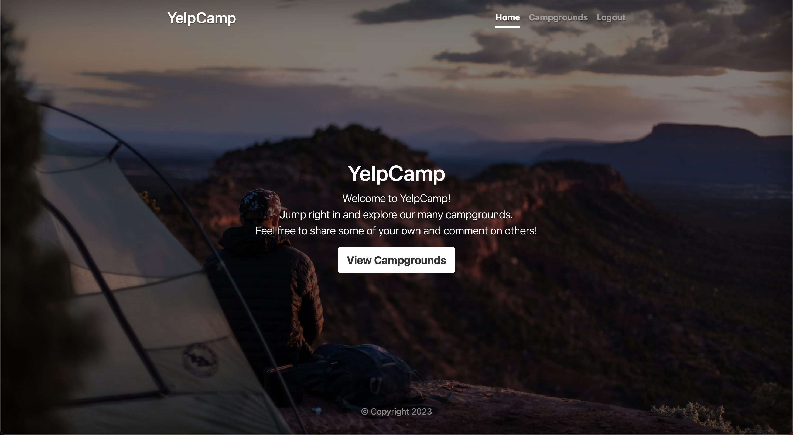
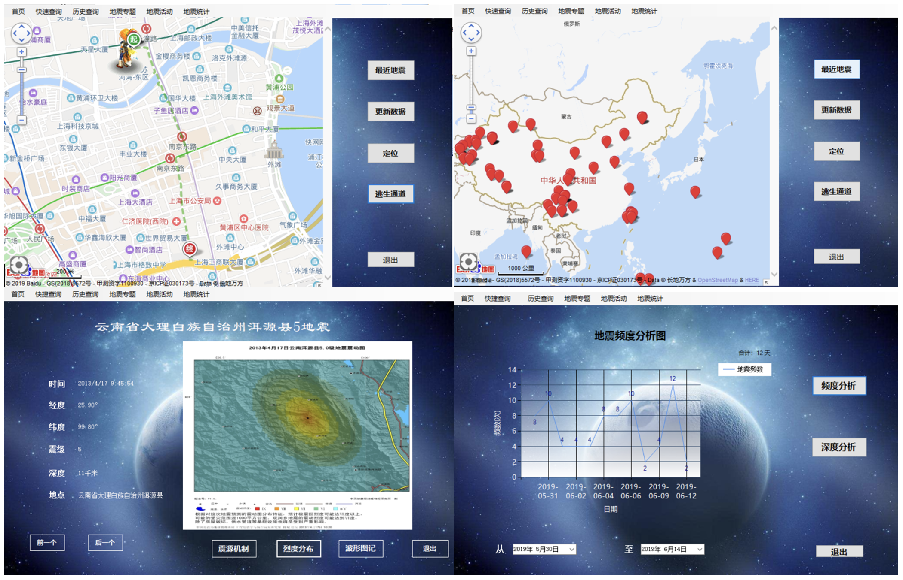
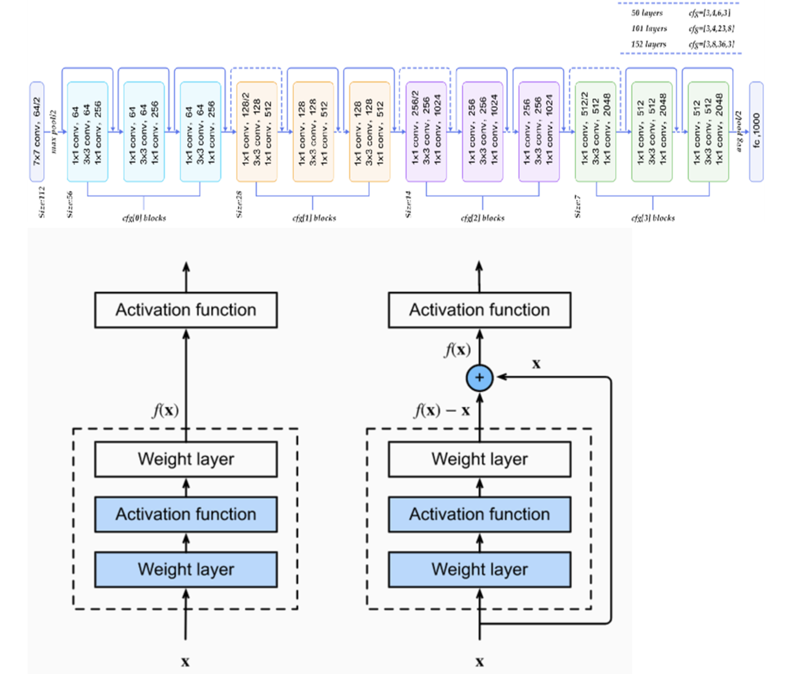

|
Chengzhan Gao
I am a Master student in Electrical and Computer Engineering at University of California San Diego (UCSD),
Before joining in UCSD, I received my Bachelor's Degree at Tongji University(Shanghai, China).
I am interested in Web Development, App Development and Machine Learning.
Email /
Linkedin /
Github
|

|
Education
M.S. Sep. 2022 - Present
Electrical and Computer Engineering, University of California San Diego, U.S.
Track: Machine Learning and Data Science
GPA: 3.78 / 4.00
|

|
B.S. Sep. 2017 - Jun. 2022
Civil Engineering, Tongji University, China
GPA: 4.82 / 5.00 • Rank:2nd/456
Sep. 2019 - Jun. 2020
School of Foreign Languages, Tongji University, China
German Intensive Course
GPA: 5.00 / 5.00 • Rank:2nd/102
|

|
|
Work Experience
Esurgi Biotech, Lutherville Timonium, Maryland
Software Engineer Intern • Jan. 2023 - Apr. 2023
Employer: Payam Kamjoo
- Designed and implemented responsive and user-friendly interfaces with React.js, debugged and fixed issues in existing components, optimizing the application's speed and scalability.
- Optimized front-end performance using coding splitting and lazy loading, reducing initial load time by 30%. Developed custom hooks for code reusability and logic abstraction.
- Leveraged Redux for state management, leading to more predictable and consistent application behavior.
- Integrated GraphQL into the project to manage data requests, significantly reducing the amount of data fetched from the server.
- Designed and constructed a patient information database and successfully deployed
it on the Firebase platform.
|

|
EMApps, San Diego, California
Software Engineer Intern • Nov. 2022 - Dec. 2022
Employer: Jota Yamaguchi
- Assisted in developing and fleshing out plan for the cross-platform App
Clib, which aims to improve roommates'
relationships through functions like shared schedule and money split.
- Implemented specific pages of the App with React-Native; Designed and implemented
navigation system with React-Navigation; Implemented user authentication,
built data models and database with AWS Amplify.
|
|
|
Research Experience
Electrical and Computer Enigeering Department, University of California San Diego
Graduate Researcher • May. 2023 - Present
Supervised by Prof. Pengtao Xie
- Extracted Drug and Protein dataset from wikipedia and did data preprocessing;
- Leveraged GPT-4 to generate structured question-answer pairs from the extracted dataset;
- Employed the new dataset to fine-tune the DrugChat model, significantly enhancing its ability to accurately interpret and respond to queries concerning compound molecular structures.
|
|
|

-
Created an Express framework-based website where people can share and fetch campgrounds information;
-
Mainly employed AJAX technology, and RESTful APIs to handle HTTP requests;
-
Provided the geolocation feature for users to view campgrounds by using Google Map API.
-
Deployed a web service in Fly to make application scalable and maintainable

-
Built a database of earthquake occurrence and emergency shelters with web crawler technology using SQL, JavaScript and Python;
-
Developed a software for earthquakes data visualization, real-time earthquake notification and emergency shelters router-guidance

-
Revisited the Adaptive Instance Normalization (AdaIN) style transfer, a significant advancement in the domain of style transfer.
-
Introduced multi-level style transfer, applying the AdaIn module to various encoder levels instead of exclusively at the last level. The updated model generated more holistic and detailed stylized images, better retaining the original content.
-
Further enhancement was made by replacing the AdaIn module with an attention module, improving the model's capacity to stylize images beyond color, also considering other features like texture and shape.

-
Proposed a visualization method of discrete fracture network with randomly generated fracture trace maps based on machine vision methods and statistical principles using Python language, and thus established a complete discrete fracture network similarity evaluation system.
-
Proposed a pointing plus gridding algorithm to accurately calculate the position and density similarity of trace maps, innovatively took spacing similarity index into the calculation of comprehensive similarity
-
Applied the established system to the actual project to test its reliability and applicability

- Built an Auto-Regressive Integrated Moving Average model to predict the expansion of hornets;
-
Trained a CNN-based model to distinguish Asian Giant Hornets from other bees;
-
Implemented a multi-parameter optimization technique and finally F1-Score reached 0.992 while accuracy reached 0.987.
-
Question Extractor
The original project provides a quick-tool to use a non-fine-tuned language model to extract question/answer pairs automatically from existing textual data.
My contributions: Provided two solustions to keeping reaching the token limit of the large language model.
One is to use the decorator from the third party's package 'tenacity' to keep retrying to send tokens after getting the error of reaching token limit, and the other is to to distribute the task over multiple APIs to alleviate the burden.
-
Yun, B., Honghao, L., Chengzhan, G., Xuehui, Z., & Dilu, X., (2019). A Device and Method for Building Inspection and Repair based on UAV (Chinese Patent No. 201911328253.0)(Under Review)
Honors & Scholarships
-
Outstanding Graduate of Shanghai
Jun. 2022
-
China National Scholarship
Sep. 2018
-
China National Scholarship
Sep. 2019
-
China National Inspirational Scholarship
Sep. 2021
-
Outstanding Student of Tongji University
Oct. 2020
-
First-Grade Scholarship of Tongji University
Sep. 2020
-
First-Grade Scholarship of Tongji University
Sep. 2021
-
Dean Award(Future Star Award) of College of Civil Engineer
Sep. 2020
-
Advanced Individual in “Outstanding Civil Engineer Pioneer Action” of College of Civil Engineer
Dec. 2021
|
Awards
-
3rd Prize in Tongji University's Innovation and Entrepreneurship Forum
Jul. 2020
-
2nd Prize of 12th Zhou Peiyuan National College Student Mechanics Competition
Aug. 2019
-
1st Prize of 12th Zhou Peiyuan College Student Mechanics Competition in Shanghai
Aug. 2019
-
2nd Prize of the 10th National College Student Mathematics Competition
Nov. 2018
-
2nd Prize of the 10th College Student Mathematics Competition in Shanghai
Nov. 2018
-
3rd Prize of College Student Physics Competition (Shanghai Division)
Nov. 2020
-
1st Prize of Mathematics Competition of Tongji University
Jul. 2018
-
2nd Prize of Physics Competition of Tongji University
May. 2020
|
Other Work Experience
BY Civil Engineering Consulting CO., LTD, Shanghai, China
Engineer Assistant Intern • Aug. 2018 - Sep. 2021
Employer: Yun Bai
-
Participated in the development of the company website
-
Explored the application of information technology into infrastructure maintenance and management
-
Participated in consulting task of risk management in geotechnical engineering projects
-
Collected construction data and experts survey results, and produced consultancy reports
|
|
Shanghai Construction Group Co., Shanghai, China
Engineer Assistant • Jul. 2021 - Aug. 2021
Employer: Hao Chen
- Collected construction data in pile foundation driving
- Analyzed data and provided feedback to pile construction process
|
|
|
|